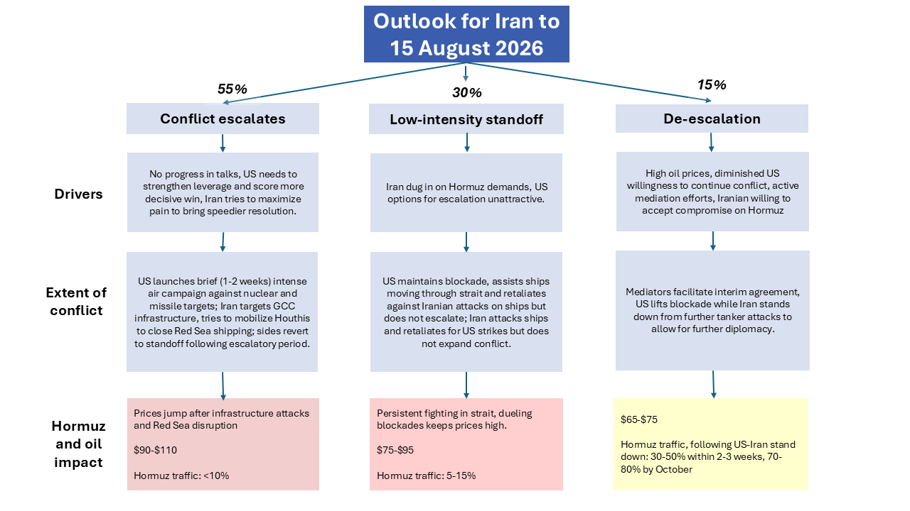
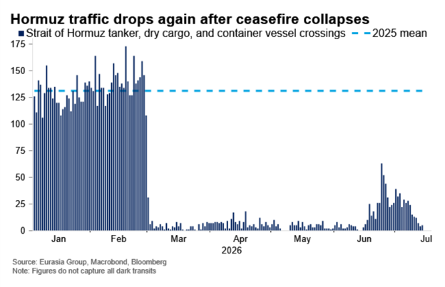

|
 |
|||
|
||||
|
||
Both sides will resume their standoff, with escalation likely in the next month. Both the US and Iran are likely to maintain their aggressive postures now that the shaky peace is over (see: Traffic through Hormuz will fall as shaky peace collapses, 13 July 2026). Hormuz transits will fall, oil prices will rise (see: Crude prices will rise as US resumes blockade, 13 July 2026), rounds of fighting will recur, and each side has an incentive to escalate to secure more decisive wins before pursuing de-escalation. Such escalation is likely before mid-August (55%), with a lower probability of a standoff that continues at the present level of low intensity (30%). With both sides showing little flexibility, and with the previous deal (negotiated over months) effectively dead, scope for de-escalation is limited in the next month (15%).  Iran won’t back down. Iran has dismissed the (apparently, inadequate) financial incentives of the June deal in favor of a bigger prize: permanent control over the Strait of Hormuz. Iran wants its influence over the strait recognized, such that all traffic moving through the strait would need to coordinate with Iranian authorities—laying the groundwork for the eventual charging of tolls and/or fees. This ambition motivated recent attacks on shipping (see: Skirmishing will continue as Iran pushes its luck in Hormuz, 8 July 2026) and has emerged as a key strategic objective for Iran’s leadership, superseding its interest in sticking to the terms of the June deal. Iran’s emboldened stance raises the risk of escalation that affects oil. Rather than wait out the US, Iran will be looking for ways to increase pressure, forcing both the US and regional states to acquiesce to its demands. Likely avenues for such escalation are attacks on regional energy infrastructure, along the lines of what was carried out during the war in March, and efforts to disrupt shipping through the Red Sea. The latter would require cooperation from Iran’s Houthi allies in Yemen, who are embroiled in their own confrontation with Saudi Arabia (see: Airport strike raises risk of Houthi actions targeting Saudi energy, 13 July 2026). US options to reopen the strait through force alone are limited. US President Donald Trump has embraced riskier and more aggressive tactics than Eurasia Group had anticipated. However, reopening the strait through force alone faces significant obstacles. The US is working under a limited timeframe—risks of energy price increases, depleted product stockpiles, and limited supplies of munitions will cap any new offensive push to a period of one to two months. Strikes on coastal military targets have proven marginally effective at reducing Iran’s capability to harass shipping, and a campaign to reopen the strait through force alone would require a far greater commitment that even a more risk-tolerant Trump is likely to authorize. US escalation will reframe the conflict around strategic goals. US justification for new strikes will be to weaken Iran enough to shift the balance of power. The US is likely to launch a short, intense air campaign to degrade key Iranian capabilities in a way that tilts the strategic balance (if not the contest over Hormuz) in its favor. Such a campaign could come in many forms, but would likely feature the use of bunker-busting bombs called Massive Ordnance Penetrators, or MOPs , against high-value targets. These include Iran’s remaining nuclear facilities, such as its stockpile of enriched uranium at Isfahan and its facility currently under construction at Kuh-e Kolang Gaz La (aka Pickaxe Mountain). Other targets include Iran’s deeply-buried stockpiles of ballistic missiles which, unlike more vulnerable missile production sites, were relatively undamaged in the first round of strikes. A short campaign to eliminate—or even just degrade—these strategic capabilities would allow Trump to frame the return to war as driven by strategic concerns, and present a plausible narrative of victory. Destruction of Iran’s stockpile of uranium, or measures to render that stockpile inaccessible, would also reduce the need for the US to seek a negotiated settlement that addresses its nuclear program. The latter is another means by which the administration can claim victory, even as it continues to vie with Iran over the strait.  Ongoing, low-intensity conflict and acknowledgement of Iran’s influence over the strait are likely. Pressures from rising oil prices and mounting concerns about available stocks of munitions will likely compel the US to seek managed de-escalation—it is unclear whether those pressures will become decisive in late August or later. At the same time, given Iran’s determination to enforce a new status quo in Hormuz, the most likely long-term outcome is a compromise that both acknowledges its influence, and delivers some form of monetary reward. While the US will publicly reject such a compromise, it will likely be forced to accept it as a de facto change from the prewar status quo. |